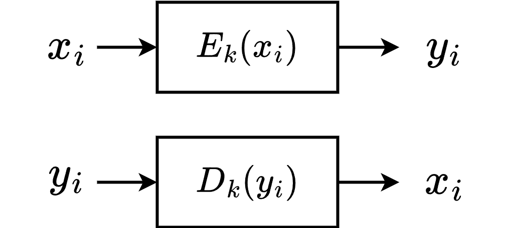
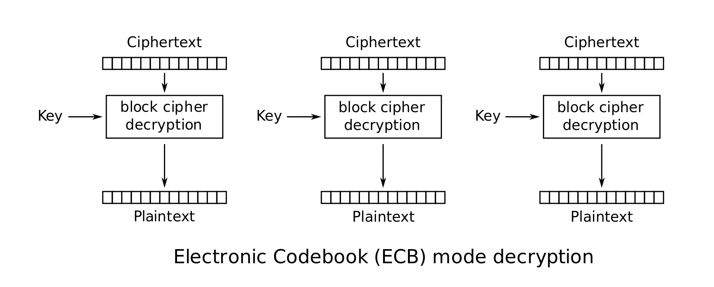
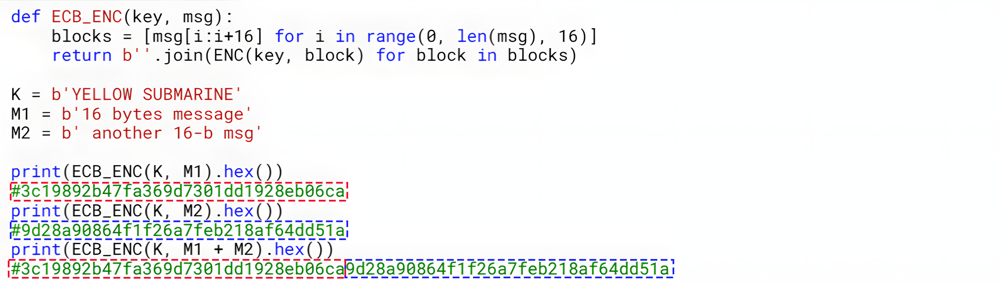
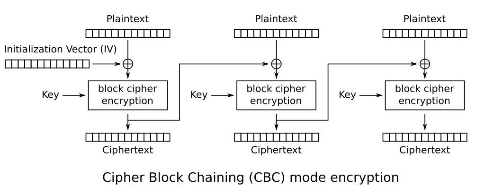
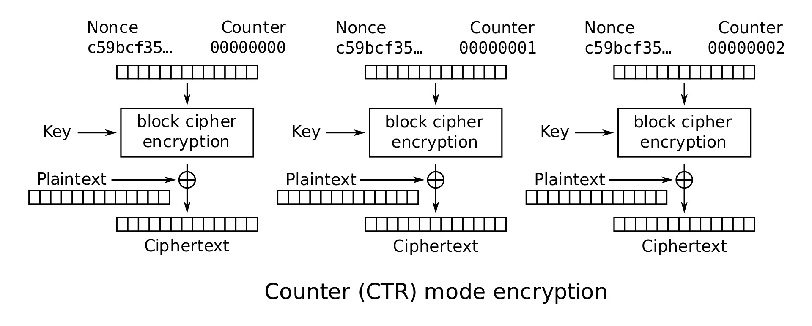
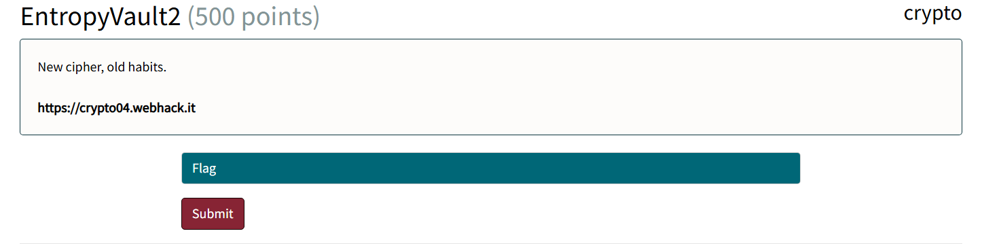
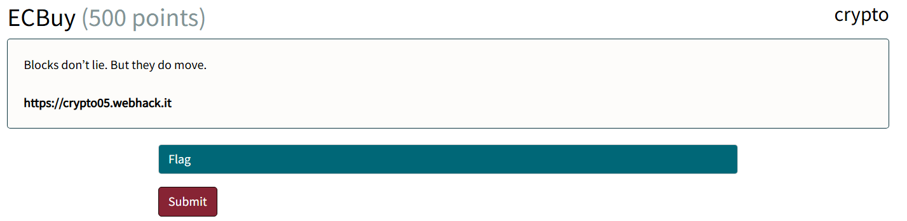
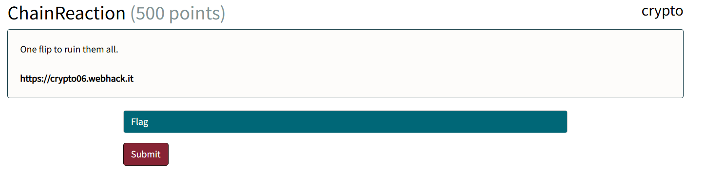

<!-- .slide: data-state="front hide-controls" --> <div id="title">Lab on Block Cipher Operation Modes</div> <div id="subtitle">Data Privacy and Security</div> <div id="date">Data Science and Management (DASMA)</div> --- ## From Perfect Secrecy to Practical Security <div class="content-center"> <div class="alert alert-recall">OTP is <b>theoretically perfect</b>, but <b>impractical</b> in real systems and <b>dangerous</b> when misused.</div> <br/> <div class="fragment" data-fragment-index="1"> OTP limitations: - Key must be **as long as the message** $\\Longrightarrow$ leads to storage and distribution problems. - Key must **never be reused** $\\Longrightarrow$ hard to generate many keys at scale. - Key must be **shared securely** in advance $\\Longrightarrow$ requires a secure channel before communication. <br/> <br/> </div> <div class="fragment" data-fragment-index="2"> <div class="alert alert-note">Modern symmetric ciphers replace perfect secrecy with <b>computational security</b>, enabling short, reusable keys.</div> <br/> - **Perfect secrecy**: the ciphertext reveals **no information** about the plaintext, even to an all-powerful attacker. - **Computational security**: the ciphertext could theoretically reveal information about the plaintext, but extracting it is **computationally infeasible** with realistic computing power. </div> </div> --- ## Symmetric Cipher Approaches <div class="content-center"> Two main approaches: <br/> <div class="fragment" data-fragment-index="1"> 1. **Stream** ciphers: - Inspired by OTP. - Given a secret key, generate a byte of stream called *keystream* that has the same length as the message. - Encrypt/decrypt bits from x individually using a XOR operation with the keystream (as in OTP). <br/> </div> <div class="fragment" data-fragment-index="2"> 2. **Block** ciphers: - Split the message x in blocks of fixed size. - Encrypt/decrypt each block, then combine the results according to the operation mode. - Different *operation mode*: process blocks independently, chain blocks, etc. <br/> <br/> </div> <div class="fragment" data-fragment-index="3"> <div class="alert alert-note">Modern symmetric encryption algorithms (e.g., <b>AES</b>, DES, ...) are built on these two primitives.</div> </div> </div> --- <!-- .slide: data-state="break-blue hide-controls" --> # Block Ciphers --- ## Block Ciphers <div class="content-center"> Given: - A block $x_i$ of the message $x$ of $h$ bits ($h$ is <u>fixed</u> by the block cipher). - A key $k$ of $n$ bits ($n$ <u>fixed</u> by the block cipher). - $n$ can be different from $h$. Then: <div class="cell-center"> <p></p> </div> <br/> <br/> <div class="fragment" data-fragment-index="1"> <div class="alert alert-hint">The full plaintext/ciphertext is obtained by combining the processed blocks according to the <b>mode of operation</b>.</div> </div> </div> --- ## What if the message is larger than the block size? <div class="content-center"> Strategy: 1. **Divide** the message into blocks of size $h$. 2. Use a **mode of operation** to combine the blocks during encryption. <br> Common modes of operation: - Electronic Code Block (**ECB**) - Cipher Block Chaining (**CBC**) - Counter Mode (**CTR**) - ... <br/> <div class="fragment" data-fragment-index="1"> <div class="alert alert-warning">Choosing the right mode affects both security and how blocks are processed.</div> </div> </div> --- ## Electronic Code Block (ECB) <div class="content-center"> <div class="alert alert-hint"><b>IDEA</b>: Encrypt each plaintext block independently, then append them to form the full ciphertext.</div> <br/> <div class="columns-container columns-center"> <div class="col"> <div class="cell-center"> Encryption:<br> </div> </div> <div class="col"> <div class="cell-center"> Decryption:<br> <p></p> </div> </div> </div> Notice that: - $Enc_k(M) = Enc_k(M_1)\\ \\|\\ Enc_k(M_2)\\ \\|\\ \\dots\\ \\|\\ Enc_k(M_n)$ - $Dec_k(C) = Dec_k(C_1)\\ \\|\\ Dec_k(C_2)\\ \\|\\ \\dots\\ \\|\\ Dec_k(C_n)$ - Each block is **treated separately** i.e. there's **no chaining or linking** between blocks. </div> --- ## Electronic Code Block (ECB) - Weakness <div class="content-center"> Problem: - Identical plaintext blocks produce identical ciphertext blocks. - Patterns in the plaintext can **leak through the ciphertext**. <br/> <div class="fragment" data-fragment-index="1"> <div class="cell-center"> <p></p> </div> </div> </div> --- ## Electronic Code Block (ECB) - Exploitation <div class="content-center"> - **Blocks reordering**: the message "Bob transfers `$`10 to Luca" could be manipulated into "Luca transfers `$`10 to Bob". - **Blocks can be replaced, removed, appended**: the message "Transfer `$`10 to Oscar" could be manipulated into "Transfer `$`10000 to Oscar". - **Encrypting the same message twice will generate the same ciphertext**: anyone can detect you are sending the same message twice, which could be a privacy issue! <br/> <div class="fragment" data-fragment-index="1"> Example: assume a bank stores account infos like so: ```python #m1 = [USER:RALLI][CREDIT:10€] c1.hex() = [8f3a91c4e2d6b7a09c5f1e8a42bd7c11][4d9b6e2a7f31c8e5a04b2d6f91aa73ce] #m2 = [USER:COPPA][CREDIT:1000€] c2.hex() = [b71c4f2a9e803d6c5a18e29f04db7c92][a3f9c2d8715e04b6cc9a21f8e73d0b44] #Swap CREDIT block from m2 with CREDIT block from m1 #[USER:RALLI][CREDIT:1000€] [8f3a91c4e2d6b7a09c5f1e8a42bd7c11][a3f9c2d8715e04b6cc9a21f8e73d0b44] #jackpot! ``` </div> </div> --- ## Cipher Block Chaining (CBC) <div class="content-center"> <div class="alert alert-hint"><b>IDEA</b>: Each plaintext block is XORed with the previous ciphertext block.</div> <br/> <div class="columns-container columns-center"> <div class="col"> <div class="cell-center"> Encryption:<br> <p></p> </div> </div> <div class="col"> <div class="cell-center"> Decryption:<br> <img src="img/cbc-dec2.jpg" style="height: 350px;"/> </div> </div> </div> Notice that: - $Enc_k(M) = Enc_k(M_1 \\oplus IV)\\ \\|\\ Enc_k(M_2 \\oplus C_1)\\ \\|\\ \\dots\\ \\|\\ Enc_k(M_n \\oplus C_{n-1})$ - $Dec_k(C) = Dec_k(C_1) \\oplus IV\\ \\|\\ Dec_k(C_2) \\oplus C_1\\ \\|\\ \\dots\\ \\|\\ Dec_k(C_n) \\oplus C_{n-1}$ - A **random IV initializes the chaining**, causing each block to influence the next. </div> --- ## Cipher Block Chaining (CBC) - Weaknesses <div class="content-center"> **Bit flipping**: flipping (changing) a bit in a ciphertext block... - completely corrupts the corresponding plaintext block; - flips the same bit in the next plaintext block. This allows **controlled modifications** of the decrypted message (**malleability**). <br/> <div class="fragment" data-fragment-index="1"> Initialization Vector (IV) requirements: - It must be **random**, and **never reused** with the same key. - Reusing it can lead to information leakage about the first plaintext block. - It must be **authenticated**, otherwise attackers can modify it to control the first plaintext block. </div> </div> --- ## Cipher Block Chaining (CBC) - Exploitation <div class="content-center"> Assumptions: - The **IV** is **prepended to the ciphertext** and sent to the user: $ciphertext = IV\\ \\|\\ C₁\\ \\|\\ C₂\\ \\|\\ …$ - CBC is used **without authentication**. <div class="fragment" data-fragment-index="1"> Observations: - First step in CBC's decryption algorithm: $Dec_k(C) = (Dec_k(C_1) \\oplus IV) = M_1$ - The attacker has control over the IV => by flipping selected bits of the IV, they can **predictably modify the first plaintext block**. <br/> <br/> </div> <div class="fragment" data-fragment-index="2"> **Example**: suppose the attacker wants to change the first bit $m$ of plaintext message $M$ into a desired bit $m'$... <div class="cell-center"> $IV' = IV \\oplus m \\oplus m'$ $Dec_k(C) = (Dec_k(C_1) \\oplus IV') \\ |\\ \\dots = (Dec_k(C_1) \\oplus IV \\oplus m \\oplus m') \\ |\\ \\dots$ $= (M_1 \\oplus m \\oplus m') \\ |\\ \\dots = (M') \\ |\\ \\dots$ </div> Result: the decrypted message $M'$ is identical to $M$, **except for the first bit** which is changed from $m$ to $m'$. </div> </div> --- ## Counter Mode (CTR) <div class="content-center"> <div class="alert alert-hint"><b>IDEA</b>: Like OTP, but each block uses a different key derived from nonce + counter.</div> <br/> <div class="columns-container columns-center"> <div class="col"> <div class="cell-center"> Encryption:<br> <p></p> </div> </div> <div class="col"> <div class="cell-center"> Decryption:<br> <img src="img/ctr-dec.jpg" style="height: 350px;" /> </div> </div> </div> Notice that: - $Enc_k(M) = (M_1 \\oplus Enc_k(\\text{nonce} | 0))\\ |\\ (M_2 \\oplus Enc_k(\\text{nonce} | 1))\\ |\\ \\dots\\ |\\ (M_n \\oplus Enc_k(\\text{nonce} | n))$ - $Dec_k(C) = (C_1 \\oplus Enc_k(\\text{nonce} | 0))\\ |\\ (C_2 \\oplus Enc_k(\\text{nonce} | 1))\\ |\\ \\dots\\ |\\ (C_n \\oplus Enc_k(\\text{nonce} | n))$ - nonce + counter generate a **keystream**, which is then **XORed with each block independently**. </div> --- ## Counter Mode (CTR) - Weaknesses <div class="content-center"> Nonce requirements: - Must be **unique** for every encryption under the same key. - Reusing a nonce causes **keystream reuse**, leaking relationships between plaintexts. <br/> <div class="fragment" data-fragment-index="1"> Counter requirements: - Must **change for every block**. - Must **never repeat** within the same encryption. - A static or repeating counter breaks keystream uniqueness. <br/> <br/> </div> <div class="fragment" data-fragment-index="2"> <div class="alert alert-warning">If both nonce and counter are static, CTR <b>degenerates into OTP with key reuse</b>.</div> </div> </div> --- ## Counter Mode (CTR) - Exploitation <div class="content-center"> **Malleability** (Bit‑Flipping) - Each step in CTR decryption is $M_i = C_i \\oplus Enc_k(\\text{nonce} | i)$ - Attacker can flip a bit in the ciphertext: $C_i' = C_i \\oplus \\Delta \\quad$ where $\\quad \\Delta = m \\oplus m'$ - Decryption: $M_i' = C_i' \\oplus Enc_k(\\text{nonce} | i) = C_i \\oplus \\Delta \\oplus Enc_k(\\text{nonce} | i) = M_i \\oplus \\Delta$ Result: the decrypted message $M'$ is identical to $M$ except for the **bit $m$ being changed into $m'$**. <br/> <div class="fragment" data-fragment-index="1"> **Nonce Reuse** - Given two messages encrypted with the same nonce: <div class="cell-center"> $C_i = M_i \\oplus Enc_k(\\text{nonce} | i)$ $C_i' = M_i' \\oplus Enc_k(\\text{nonce} | i)$ </div> - Attacker can compute: $C_i \\oplus C_i' = M_i \\oplus Enc_k(\\text{nonce} | i) \\oplus M_i' \\oplus Enc_k(\\text{nonce} | i) = M_i \\oplus M_i'$ <br/> Result: the attacker can use **cribbing/frequency analysis** to reconstruct the plaintext. </div> </div> --- ## Advanced Encryption Standard (AES) <div class="content-center"> <div class="alert alert-recall">The most widely used symmetric encryption algorithm in modern cryptography,</div> <br/> Characteristics: - Block size: **16 bytes**. - Key lengths: 128, 192, or 256 bits. <br/> It implements modes of operations: - MODE_ECB - MODE_CBC - MODE_CTR - ... </div> --- ## AES in Python <div class="content-center"> <div class="alert alert-recall">Installation: <code>pip install pycryptodome</code></div> <br/> ```python from Crypto.Cipher import AES cipher = AES.new(KEY, AES.MODE_CBC, IV) cipher.encrypt(data) ``` <br/> <div class="alert alert-warning">If the data length isn’t a multiple of 16 bytes, <b>it must be padded</b>.</div> <br/> ```python from Crypto.Util.Padding import pad, unpad padded_data = pad(data, 16) cipher.encrypt(padded_data) ``` </div> --- ## AES in Python <div class="content-center"> AES **ECB_MODE** implementation: ```python def encrypt_ecb(plaintext): cipher = AES.new(key, AES.MODE_ECB) ciphertext = cipher.encrypt(pad(data, AES.block_size)) return ciphertext.hex() ``` <br/> AES **CBC_MODE** implementation: ```python def encrypt_cbc(plaintext): iv = get_random_bytes(16) cipher = AES.new(key, AES.MODE_CBC, iv) ciphertext = cipher.encrypt(pad(data, AES.block_size)) return iv, ciphertext.hex() ``` <br/> AES **CTR_MODE** implementation ```python def encrypt_ctr(plaintext): nonce = get_random_bytes(8) cipher = AES.new(KEY, AES.MODE_CTR, nonce=nonce) ciphertext = cipher.encrypt(plaintext.encode()) return ciphertext.hex() ``` </div> --- ## Time to Cook <div class="content-center"> <div class="cell-center"> </div> </div> --- <!-- .slide: data-state="break-blue hide-controls" --> # Entropy Vault `II` <div class="content-center"> Crypto Challenge 04 </div> --- ## Entropy Vault II - Reconnaissance <div class="content-center"> <div class="cell-center"> <p></p> </div> <br/> What can we observe? The challenge... - claims to use **AES-CTR** encryption; - provides an **encryption oracle** for user-chosen messages; - allows us to **retrieve the encrypted flag**. </div> --- <!-- .slide: data-auto-animate --> <h2 data-id="title">Entropy Vault II - Hypothesis</h2> <div class="content-center"> ```python #fixed nonce (set globally once) NONCE = os.getenv("NONCE", "noncenon").encode() def encrypt(plaintext): try: cipher = AES.new(KEY, AES.MODE_CTR, nonce=NONCE) ciphertext = cipher.encrypt(plaintext.encode()) return ciphertext.hex() except Exception as e: print(f"Encryption error: {e}") return None ``` <br/> <div class="fragment" data-fragment-index="1"> <div class="alert alert-hint">Nonce reuse in AES-CTR causes keystream reuse, effectively <b>turning it into a OTP with key reuse</b>.</div> </div> <div class="fragment" data-fragment-index="2"> <div class="alert alert-hint">We can encrypt an <b>arbitrary number</b> of messages.</div> </div> </div> --- ## Entropy Vault II - Exploitation <div class="content-center"> 1. **Encrypt a known plaintext** by submitting a message to the encryption oracle. <br> 2. **Extract the key** by XOR-ing the known plaintext with the recovered ciphertext: ``` ciphertext ⊕ plaintext = key ``` <br> 3. **Decrypt the flag** by XOR-ing the encrypted flag with the recovered key: ``` encrypted_flag ⊕ key = flag ``` <br/> <br/> <div class="fragment" data-fragment-index="1"> <div class="alert alert-warning"><b>NOTE</b>: the plaintext must be <b>long enough</b> to generate a key that covers the full encrypted flag.</div> </div> </div> --- <!-- .slide: data-state="break-blue hide-controls" --> # ECBuy <div class="content-center"> Crypto Challenge 05 </div> --- ## ECBuy - Reconnaissance <div class="content-center"> <div class="cell-center"> <p></p> </div> <br/> What can we observe? - Registration grants a **$10 voucher**. - There's a shop section that includes the flag. - Each shop item has an **associated verification token** (displayed in the **view details** pop-up). </div> --- ## ECBuy - Hypothesis <div class="content-center"> <div class="alert alert-hint">The voucher consists of <b>two padded 16-byte blocks</b> in the format [USER:username][CREDIT:amount], encrypted with <b>AES-ECB</b>.</div> <br/> ```python def create_voucher(username, amount): #USER:name____ CREDIT:amount___ user_block = f"USER:{username}".ljust(16, '_') credit_block = f"CREDIT:{amount}".ljust(16, '_') return aes_ecb_encrypt(user_block + credit_block) ``` <br/> <br/> <div class="fragment" data-fragment-index="1"> <div class="alert alert-hint">The verification token consists of <b>two padded 16-byte blocks</b> in the format [ITEM:name][CREDIT:amount], encrypted with AES-ECB.</div> <br/> ```python def create_item_token(item_name, price): clean_name = ''.join(c for c in item_name if ord(c) < 128).strip()[:10] #ITEM:name______ CREDIT:price____ item_block = f"ITEM:{clean_name}".ljust(16, '_') credit_block = f"CREDIT:{price}".ljust(16, '_') return aes_ecb_encrypt(item_block + credit_block) ``` <br/> <br/> </div> <div class="fragment" data-fragment-index="2"> <div class="alert alert-hint">Both voucher and verification token <b>share a 16-bytes block</b> that determines the amount.</div> </div> </div> --- ## ECBuy - Exploitation <div class="content-center"> 1. **Register** with any username. <br> 2. **Retrieve** both the generated voucher (without using it) and the verification token of the flag item. <br> 3. **Swap** the last block of the voucher with the last block of the verification token. ```python #Example: username 'lralli' #Voucher: [USER:lralli______][CREDIT:10_______] #Verification token: [ITEM:flag________][CREDIT:10000____] #Swap: [USER:lralli______][CREDIT:10000____] ``` <br/> 4. **Redeem** the new token and buy the flag. </div> --- <!-- .slide: data-state="break-blue hide-controls" --> # ChainReaction <div class="content-center"> Crypto Challenge 06 </div> --- ## ChainReaction - Reconnaissance <div class="content-center"> <div class="cell-center"> <p></p> </div> <br/> What can we observe? - The NFT shop lists items, each with an **associated owner**. - Registering a user returns an **encrypted login token**. - Login requires providing a valid token to authenticate. </div> --- ## ChainReaction - Hypothesis <div class="content-center"> ```python #fixed IV (set globally once) IV = os.urandom(16) ... def encrypt_token(username): padded_username = pad(username.encode(), AES.block_size) cipher = AES.new(KEY, AES.MODE_CBC, IV) ciphertext = cipher.encrypt(padded_username) return (IV + ciphertext).hex() ``` <br/> <br/> <div class="fragment" data-fragment-index="1"> <div class="alert alert-hint">The fixed IV makes the produced token <b>malleable</b>, enabling <b>bit-flip attacks</b>.</div> </div> </div> --- ## ChainReaction - Exploitation <div class="content-center"> 1. **Register** with username xralli, where x can be any character but 'l' (as lralli is already registered). <br> 2. **Retrieve** the IV from the produced login token ``` IV = token[:BLOCK_SIZE] #as token = IV + ciphertext ``` <br> 3. **Bit-flip** the first byte of the IV with the $\\Delta$ needed to login as lralli: ``` new_token = old_token ⊕ ord('x') ⊕ ord('l') #x = char picked in step 1 ``` <br> 4. **Login** with the forged token and view the legendary NFT details to obtain the flag. </div>